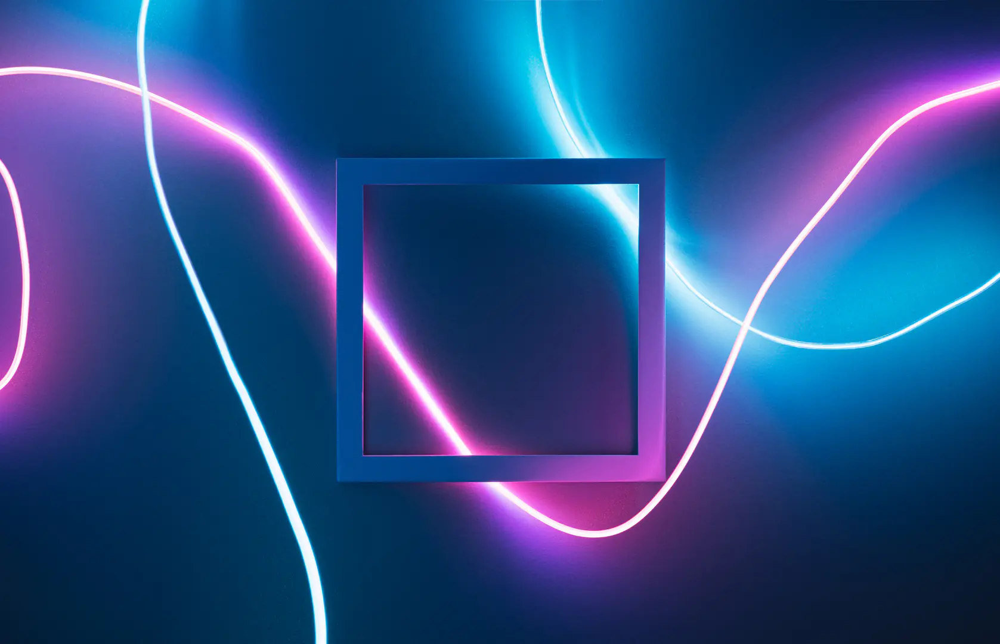

Hero & Sekcje Specjalne
Gotowe wzorce sekcji strukturalnych — od klasycznego Hero z breadcrumbs, przez wydajny GPU Parallax i przyklejane sekcje, po zaawansowany system wycięć Hero Cutout.
Hero Section & Breadcrumbs
Sekcja powitalna z nakładką (Overlay) zapewniającą czytelność tekstu na zdjęciach, zintegrowana z nawigacją okruszkową.
<section class="page-header has-overlay" style="background-image: url('bg.jpg');">
<!-- Nakładka przyciemniająca -->
<div class="overlay bg-overlay overlay-80"></div>
<div class="container position-relative z-10">
<h1 class="text-white">Tytuł Strony</h1>
<!-- Breadcrumbs -->
<nav aria-label="breadcrumb">
<ol class="breadcrumb">
<li class="breadcrumb-item"><a href="#">Start</a></li>
<li class="breadcrumb-item is-active">Aktualna strona</li>
</ol>
</nav>
</div>
</section>Płynny Parallax (GPU)
Wydajny efekt paralaksy oparty na akceleracji sprzętowej — zapewnia płynność 60 FPS nawet na starszych urządzeniach mobilnych.

Przewiń stronę
Tło przesuwa się z inną prędkością
<div class="parallax-container" style="height: 400px;">
<img src="tlo.jpg" alt="Tło" class="parallax-bg">
<div class="parallax-content">
<h2 class="text-white">Treść na parallaxie</h2>
</div>
</div>Stacking Sections (Przyklejone sekcje)
Efekt "układania kart" podczas scrollowania — każda kolejna sekcja najeżdża na poprzednią i przykleja się do góry ekranu.
Krok 1: Strategia
Przewiń w dół (Scrolluj)
Krok 2: Wdrożenie
Sekcja magnetycznie wskakuje na miejsce!
Krok 3: Sukces
<!-- Wariant z magnetycznym przeskakiwaniem (Snap) -->
<div class="stacking-container-snap">
<section class="section-stacked bg-light">
<h2>Sekcja 1</h2>
</section>
<section class="section-stacked bg-primary text-white">
<h2>Sekcja 2</h2>
</section>
</div>Hero Cutout System
Zaawansowany efekt wklęsłych narożników — kontener z treścią "wycina" dziurę w zdjęciu w tle, zachowując idealne zaokrąglenia.
Zbuduj to z molique
Ten biały kontener idealnie wycina zdjęcie pod spodem!
<section class="hero-with-cutout" style="--cutout-bg: var(--bg-body);">
<img src="foto.jpg" alt="Tło">
<!-- Wycięcie w prawym dolnym rogu (.cutout-md-br) -->
<div class="cutout-wrapper cutout-md-br w-100 w-md-50">
<div class="p-4">
<h2>Tytuł</h2>
</div>
</div>
</section>